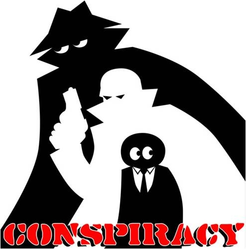

A conspiracy theory is a belief that a secret conspiracy has actually been decisive in producing a political event or evil outcome which the theorists strongly disapprove of.[3] The conspiracy theory typically identifies the conspirators, provides evidence that supposedly links them together with an evil plan to harm the body politic, and may also point to a supposed cover up by authorities or media who should have stopped the conspiracy. The duty of the theorist is to pick from a myriad of facts and assumptions and reassemble them to form a picture of the conspiracy, as in a jigsaw puzzle. A theorist may publicly identify specific conspirators, and if they deny the allegations that is evidence they have been sworn to secrecy and are probably guilty. Historian Gordon Wood argues that since the Enlightenment of the 18th century, conspiracy theorists always assume that major evil events have been orchestrated and planned, and cannot have happened accidentally or coincidentally or as an unintended consequence of an innocent plan. That is, the jigsaw puzzle really does have a correct solution that ingenious detectives can discover.[4]
Whenever anyone uses the word ‘aliens’ or ‘UFOs’ to explain anything, the human brain is at once simultaneously perked up with interest on the story and ready with a negative indignation to shoot it down as soon as it’s finished! Yet, despite no evidence that aliens actually exist, many Bermuda Triangle theorists explain events such as what happened with the Mary Celeste or The Cyclops, with alien interest in us humans and our activities! Apparently, aliens are so interested in studying humans that they really love abducting a few once in a while to conduct their research on them. It seems that around the time of the mysterious disappearances here, they were particularly active in the region, making it their favorite human abduction spot. UFOs of course (alien spaceships), even had the power to teleport objects such as large ships and planes, which explains why no one has ever even found any floating debris or the likes.
add you conspiracy 2 here
add you conspiracy 1 here
add you conspiracy 1 here